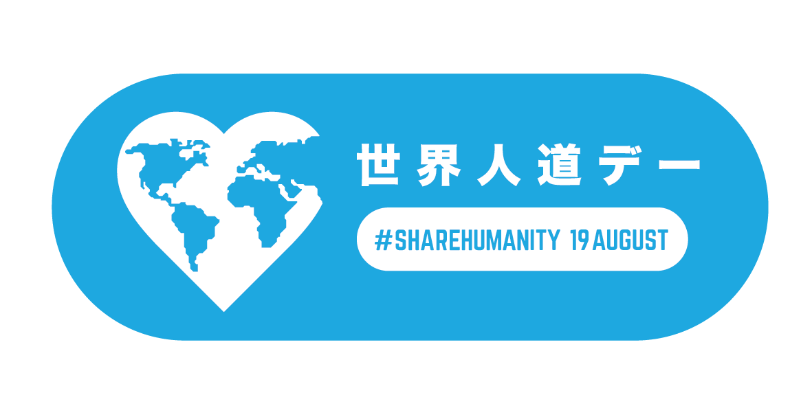

言葉や文化など背景が様々な国際チームである国連災害評価調整チーム（UNDAC）が、いつ起こるかわからない災害などに効果的に対応するためには、定期的なトレーニングが欠かせません。研修を行うことで、直近の災害について経験を共有する場にもなります。2015年7月20日から24日の5日間、JICA横浜センターでUNDACの研修が実施され、OCHAフィールドコーディネーションサポート担当・沖田陽介が担当しました。
8月20日に神戸市で開催された世界人道デー記念イベントでは、アフガニスタンからの留学生や、福島や海外で活躍するフォトジャーナリストなどのプレゼンが行われました。アフガン人として抱く平和への思い。ジャーナリストとして現場で直面する葛藤など、率直な言葉でそれぞれの思いを語り、今年のテーマ「ヒューマニティ：あなたを動かすチカラ」にふさわしい内容となりました。当日、会場に来られなかった方のために、その概要をご紹介します。
合わせて、今回のイベントのために協力してくれたアフガン人留学生2人のインタビューも掲載します。国の発展のために日本へ留学してきた思いや、日本社会の印象など、こちらもユニークな視点から語っていますので、ぜひご覧下さい。
2015年3月14日から18日にかけて、宮城県仙台市で第３回国連防災世界会議が開催され、国連人道問題調整事務所（OCHA）もこれに参加しました。康京和（カン・キョンファ）国連事務次長補率いるOCHA代表団は、オープニングセッションをはじめとする本会議に参加してステートメントを読み上げた他、国連機関によるハイレベルパネルセッションでも発言。さらには「効果的な対応のための備え」と「危機対応から強靭性構築へ」の２つのワーキングセッションでそれぞれオープニングやモデレーションを担当しました。また世界人道サミット事務局もあわせて会議に参加し、国連防災世界会議と2016年にトルコのイスタンブールで開催予定の世界人道サミットとの関連性等について活発な議論を行いました。加えて、OCHA並びに世界人道サミットの自然災害分野での取り組みについて会議参加者や一般の方々により広く知っていただけるよう、展示ブースもそれぞれ設置・運営しました。
 2016年9月11日と12日の2日間、G7主要7カ国の保健分野の担当閣僚や国際機関代表による会合が神戸で開催され、OCHAを代表して神戸事務所長の渡部正樹が参加しました。塩崎恭久厚生労働大臣が議長を務め、感染症等の公衆衛生危機に対する国際的な協力体制の強化など、国際社会が共に取り組むべき課題について意見が交わされました。
2016年9月11日と12日の2日間、G7主要7カ国の保健分野の担当閣僚や国際機関代表による会合が神戸で開催され、OCHAを代表して神戸事務所長の渡部正樹が参加しました。塩崎恭久厚生労働大臣が議長を務め、感染症等の公衆衛生危機に対する国際的な協力体制の強化など、国際社会が共に取り組むべき課題について意見が交わされました。
 Yuki Iwanami")

 2014年7月22日から3日間、ヴァレリー・エイモス国連事務次長（人道問題担当）が来日し、「世界人道サミット 北・南東アジア地域準備会合」を日本及びインドネシア政府と共催しました。7月23日と24日に開催された同会合には当該地域の災害や人道支援関係者100名以上が参加し、日本政府を代表して岸田文雄外務大臣も出席されました。こうした協議の成果は共同議長サマリーとしてまとめられ、今後開催される他の地域準備会合や2016年にトルコ・イスタンブールで開催される世界人道サミット本番に活かされることになります。
2014年7月22日から3日間、ヴァレリー・エイモス国連事務次長（人道問題担当）が来日し、「世界人道サミット 北・南東アジア地域準備会合」を日本及びインドネシア政府と共催しました。7月23日と24日に開催された同会合には当該地域の災害や人道支援関係者100名以上が参加し、日本政府を代表して岸田文雄外務大臣も出席されました。こうした協議の成果は共同議長サマリーとしてまとめられ、今後開催される他の地域準備会合や2016年にトルコ・イスタンブールで開催される世界人道サミット本番に活かされることになります。 相次ぐ紛争や自然災害、急速に進む人口増加や気候変動、なかなか克服されない貧困を背景に、増え続ける一方の緊急人道支援へのニーズ。また新興国ドナーや民間企業など、人道支援に携わるアクターの多様化と増加、ソーシャルメディアや携帯電話といった技術革新などにより、国際人道支援を取り巻く環境はめまぐるしく変化しています。このような状況の中で、一人でも多くのいのちを救い、より効率的・効果的な人道支援をするためには、今何が求められているのでしょうか。
相次ぐ紛争や自然災害、急速に進む人口増加や気候変動、なかなか克服されない貧困を背景に、増え続ける一方の緊急人道支援へのニーズ。また新興国ドナーや民間企業など、人道支援に携わるアクターの多様化と増加、ソーシャルメディアや携帯電話といった技術革新などにより、国際人道支援を取り巻く環境はめまぐるしく変化しています。このような状況の中で、一人でも多くのいのちを救い、より効率的・効果的な人道支援をするためには、今何が求められているのでしょうか。